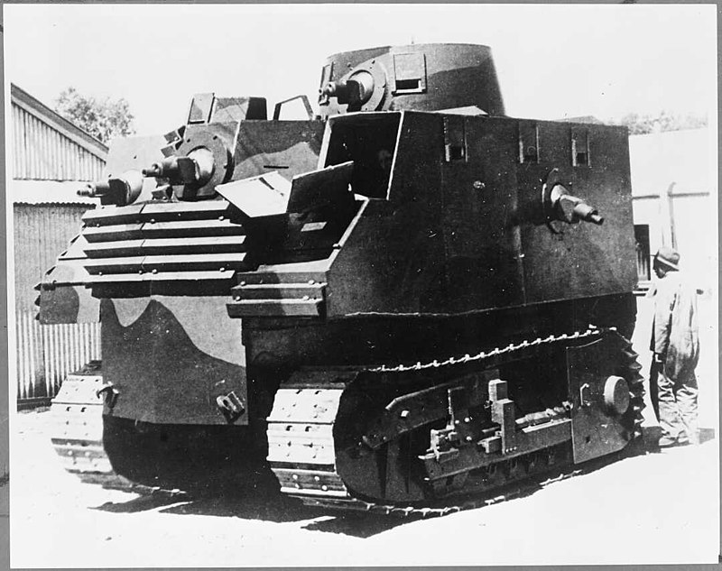
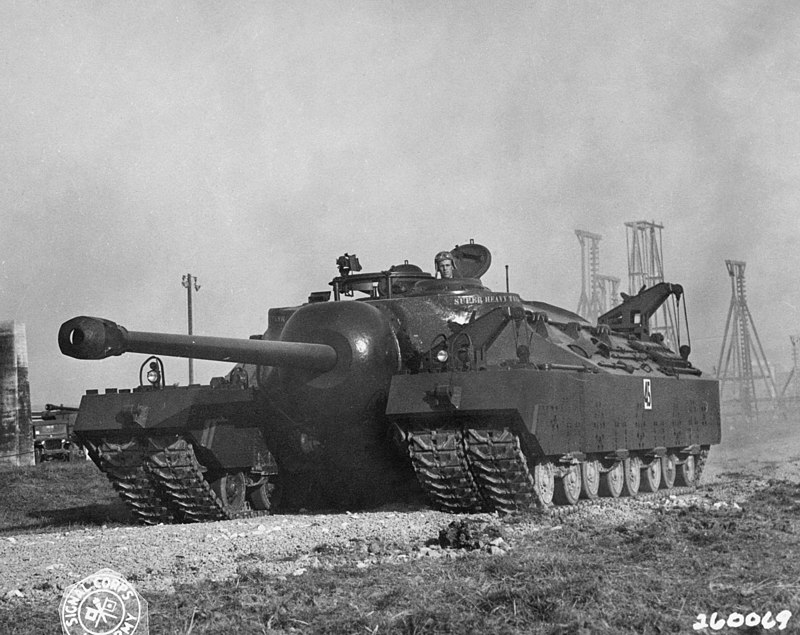

HOME
VESPA-150-TAP
BOB SEMPLE TANK
T95
ANIMATION
Funky war wepons
What are they?
Funky war wepons are inventions that where ment to suport the main battle lines of WW2 but because of theyr poor designe the wepons saw lilttle combat if any .
The 3 war weapons coverd by this site:
Vespa 150 TAP
Bob Semple tank
T95

